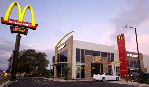

MCDONALDS
McDonald's Corporation is an American fast food company, founded in 1940 as a restaurant operated by Richard and Maurice McDonald, in San Bernardino, California, United States. They rechristened their business as a hamburger stand, and later turned the company into a franchise, with the Golden Arches logo being introduced in 1953 at a location in Phoenix, Arizona. In 1955, Ray Kroc, a businessman, joined the company as a franchise agent and proceeded to purchase the chain from the McDonald brothers. McDonald's had its original headquarters in Oak Brook, Illinois, but moved its global headquarters to Chicago in June 2018. McDonald's is the world's largest restaurant chain by revenue,serving over 69 million customers daily in over 100 countries across 37,855 outlets as of 2018.Although McDonald's is best known for its hamburgers, cheeseburgers and french fries, they feature chicken products, breakfast items, soft drinks, milkshakes, wraps, and desserts. In response to changing consumer tastes and a negative backlash because of the unhealthiness of their food,[14] the company has added to its menu salads, fish, smoothies, and fruit. The McDonald's Corporation revenues come from the rent, royalties, and fees paid by the franchisees, as well as sales in company-operated restaurants. According to two reports published in 2018, McDonald's is the world's second-largest private employer with 1.7 million employees (behind Walmart with 2.3 million employees).

HISTORY
In 1917, 15-year-old Ray Kroc lied about his age to join the Red Cross as an ambulance driver, but the war ended before he completed his training. He then worked as a piano player, a paper cup salesman and a Multimixer salesman. In 1954, he visited a restaurant in San Bernardino, California that had purchased several Multimixers. There he found a small but successful restaurant run by brothers Dick and Mac McDonald, and was stunned by the effectiveness of their operation. The McDonald’s brothers produced a limited menu, concentrating on just a few items – burgers, fries and beverages – which allowed them to focus on quality and quick service. They were looking for a new franchising agent and Kroc saw an opportunity. In 1955, he founded McDonald’s System, Inc., a predecessor of the McDonald’s Corporation, and six years later bought the exclusive rights to the McDonald’s name and operating system. By 1958, McDonald’s had sold its 100 millionth hamburger.


Our story starts with one man.
Back in 1954, a man named Ray Kroc discovered a small burger restaurant in California, and wrote the first page of our history. From humble beginnings as a small restaurant, we're proud to have become one of the world's leading food service brands with more than 36,000 restaurants in more than 100 countries.
Our journey towards good.
From the start, we've been committed to doing the right thing. And every day, all around the globe, we put people, processes and practices into place to make quality food, more responsible sourcing choices, a stronger community and a better planet. In accordance with our McDonald’s values, we’re here to make a difference, and here’s how.
Food Quality & Sourcing
We are sourcing delicious, quality ingredients in responsible ways We are helping to create a future of quality, secure and sustainable food because how our food is produced and where it comes from matter to our customers, communities and the environment. This includes sourcing quality ingredients in responsible ways and supporting farming communities. When it comes to nutrition, we are focused on families and children, as that’s where we believe we can have the biggest impact.

Food Safety
The safety and quality of our food is our top priority and we are constantly innovating to ensure we meet and exceed our customers’ expectations. We integrate food safety into every aspect of our operations, including food sourcing, menu development, packaging, distribution and logistics, and the daily running of our restaurants.

Community Connection
We Are Connecting Communities in Times of Need Being part of the community means supporting people every day, and especially when they need it most. It’s why we donate millions of pounds of food from our supply chain every year and hot meals from our restaurants to our communities in times of need and crisis. We’re also so proud to support the Ronald McDonald House Charities® (RMHC®), which enables families to stay together near world-class care facilities when a child is diagnosed with life-threatening illness.
We are committed to being good neighbors everywhere we operate. Whether through serving as a hub for people to come together over a meal or dedicating time and resources in times of need, McDonald’s is making sure we’re there for our communities. This year, the global pandemic created new challenges for communities. In response, McDonald’s suppliers and Franchisees around the world rallied together to help in impressive, all-new ways, grounded in McDonald’s refreshed values.